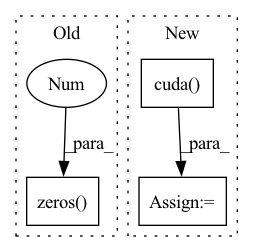

Pattern ID :1513

Before Change
out_cost = cost(predictions, targets, lengths)
assert torch.all(torch.eq(out_cost, 0))
predictions = torch.zeros(4, 10, 8)
out_cost = cost(predictions, targets, lengths)
assert torch.all(torch.eq(out_cost, 1))
After Change
device = torch.device("cuda")
cost = ComputeCost(cost_type="transducer", blank_index=0)
log_probs = (
torch.Tensor(
[
[
[
[0.1, 0.6, 0.1, 0.1, 0.1],
[0.1, 0.1, 0.6, 0.1, 0.1],
[0.1, 0.1, 0.2, 0.8, 0.1],
],
[
[0.1, 0.6, 0.1, 0.1, 0.1],
[0.1, 0.1, 0.2, 0.1, 0.1],
[0.7, 0.1, 0.2, 0.1, 0.1],
],
]
]
)
.cuda()
.requires_grad_()
.log_softmax(dim=-1)
)
targets = torch.Tensor([[1, 2]]).to(device).int()
probs_length = torch.Tensor([1.0]).to(device)
target_length = torch.Tensor([1.0]).to(device)
out_cost = cost(log_probs, targets, [probs_length, target_length])
assert out_cost.item() == 4.49566650390625
In pattern: SUPERPATTERN
Frequency: 3
Non-data size: 3
Instances
Fragment ID: 6825081
Project Name: speechbrain/speechbrain
Commit Name: bd2a2aa5da0f2df26486cff5f602d1f8f97f57a0
Time: 2020-05-18
Author: a.heba@irit.fr
File Name: tests/unittests/test_losses.py
M Class Name: AnonimousClass
N Class Name: AnonimousClass
M Method Name: test_losses(0)
N Method Name: test_losses(0)
M Parent Class:
N Parent Class:
M File Name: tests/unittests/test_losses.py
N File Name: tests/unittests/test_losses.py
M Start Line: 28
M End Line: 35
N Start Line: 33
N End Line: 61
'>
Before Change
self.eps = eps
self.n_anchors = n_anchors
self.strides = strides
self.grids = [torch.zeros(1)] * len(in_channels)
// Define criteria
self.l1_loss = nn.L1Loss(reduction="none")
After Change
self.reg_max = reg_max
self.proj = nn.Parameter(torch.linspace(0, self.reg_max, self.reg_max + 1), requires_grad=False)
self.iou_type = iou_type
self.varifocal_loss = VarifocalLoss().cuda()
self.bbox_loss = BboxLoss(self.num_classes, self.reg_max, self.use_dfl, self.iou_type).cuda()
self.loss_weight = loss_weight
def __call__(
'>
Fragment ID: 6825084
Project Name: meituan/yolov6
Commit Name: 49a80b1fdd025c9a326d0e4fea9825581dec00f4
Time: 2022-08-31
Author: lichuyi@meituan.com
File Name: yolov6/models/loss.py
M Class Name: ComputeLoss
N Class Name: ComputeLoss
M Method Name: __init__(11)
N Method Name: __init__(10)
M Parent Class:
N Parent Class:
M File Name: yolov6/models/loss.py
N File Name: yolov6/models/loss.py
M Start Line: 38
M End Line: 43
N Start Line: 27
N End Line: 49
'>
Before Change
self.eps = eps
self.n_anchors = n_anchors
self.strides = strides
self.grids = [torch.zeros(1)] * len(in_channels)
// Define criteria
self.l1_loss = nn.L1Loss(reduction="none")
After Change
self.reg_max = reg_max
self.proj = nn.Parameter(torch.linspace(0, self.reg_max, self.reg_max + 1), requires_grad=False)
self.iou_type = iou_type
self.varifocal_loss = VarifocalLoss().cuda()
self.bbox_loss = BboxLoss(self.num_classes, self.reg_max, self.use_dfl, self.iou_type).cuda()
self.loss_weight = loss_weight
def __call__(
'>
Fragment ID: 6825087
Project Name: augmentedstartups/as-one
Commit Name: 6f2f010dcaf35105030dcf5c371d3d2f97c25d90
Time: 2022-09-16
Author: ajmair.kashif@axcelerate.ai
File Name: asone/detectors/yolov6/yolov6/models/loss.py
M Class Name: ComputeLoss
N Class Name: ComputeLoss
M Method Name: __init__(11)
N Method Name: __init__(10)
M Parent Class:
N Parent Class:
M File Name: asone/detectors/yolov6/yolov6/models/loss.py
N File Name: asone/detectors/yolov6/yolov6/models/loss.py
M Start Line: 38
M End Line: 43
N Start Line: 27
N End Line: 49